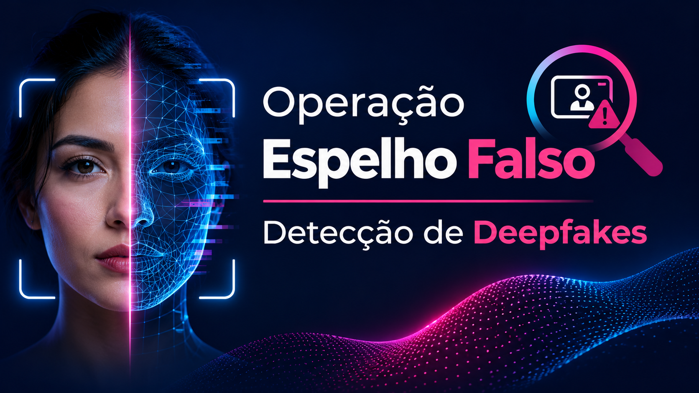

Deepfakes e reapresentação
Imagens, vídeos ou outras representações manipuladas podem ser utilizadas para tentar superar mecanismos de autenticação biométrica.
Uma investigação tecnológica sobre identidade digital, manipulação biométrica e redes financeiras suspeitas.
A prova de conceito combina visão computacional, análise de sensores, inteligência de grafos e modelos explicáveis para estudar mecanismos de prevenção à fraude.
Explorar arquitetura ↗
A evolução da IA generativa amplia os desafios de autenticação e investigação financeira. O projeto estuda como combinar diferentes sinais para reduzir a dependência de uma única verificação facial.
Imagens, vídeos ou outras representações manipuladas podem ser utilizadas para tentar superar mecanismos de autenticação biométrica.
Uma captura biométrica pode ser substituída por um fluxo de mídia controlado por software, exigindo verificações adicionais de origem e integridade.
Contas, dispositivos e outros identificadores podem formar estruturas conectadas de movimentação financeira suspeita.
O pipeline Python conecta resultados de análise visual, sinais de câmera e relacionamentos entre entidades a um motor de pontuação e explicabilidade.
Gradientes, características espectrais e análise de frequência.
Ruído de imagem, correlação e heurísticas de possível injeção virtual.
Conexões entre contas, dispositivos e IPs; detecção de comunidades.
Classificação de risco, ação simulada e geração de justificativa técnica.
Cada módulo trata uma dimensão diferente do problema. A combinação busca enriquecer a análise, mas sua eficácia precisa ser avaliada com protocolos experimentais adequados.
Estuda características da região ocular para buscar sinais associados à reapresentação de imagens ou vídeos.
Explora características de ruído presentes em imagens digitais para investigar indícios de origem e integridade do sinal.
Modela transações e identidades como uma rede de entidades conectadas, permitindo investigar padrões coletivos.
Combina atributos de risco em uma pontuação de 0 a 1000, simulando ações e produzindo uma explicação estruturada.
Explore abaixo dois resultados registrados nos testes locais do pipeline. A interação reproduz os valores documentados: não executa o modelo Python e não consulta dados bancários.
Os cenários foram desenvolvidos com imagens e metadados sintéticos.
A simulação de ataque combina características forçadas de reapresentação, câmera virtual e associação a uma rede suspeita.
O cenário legítimo recebeu pontuação intermediária no log. Pela lógica do módulo de decisão, essa faixa corresponde a um fluxo de liberação programada com verificação complementar.
O projeto inclui uma proposta de dashboard SOC em Streamlit, com indicadores de desempenho, risco, eventos e trilhas de auditoria.
Valor apresentado no estado de telemetria e no dashboard. Ainda requer benchmark reproduzível em hardware definido.
Valor documentado para o pipeline proposto. Não foi estabelecido por teste de carga independente nos materiais analisados.
Métrica exibida na simulação de fluxo operacional. Não é resultado de implantação em instituição financeira real.
Os indicadores acima são valores declarados nos materiais do projeto. O dashboard também possui dados de fallback quando a telemetria não está disponível.
Existem módulos de análise visual, PRNU, grafos, classificação de risco e geração de relatórios.
O projeto inclui testes automatizados, exemplos de execução e geração de dados sintéticos.
Faltam evidências suficientes de avaliação independente, integração bancária real e homologação externa.
Além da detecção de padrões suspeitos, a arquitetura foi concebida para discutir minimização de dados, rastreabilidade e justificativa de decisões automatizadas.
A arquitetura propõe processar imagens e características biométricas em memória volátil, reduzindo a necessidade de gravação persistente de mídias sensíveis.
A efetividade dessa política depende de auditoria de todo o ciclo de dados, incluindo logs, temporários e integrações.
O módulo de decisão gera contribuições de variáveis e um relatório textual para auxiliar a interpretação de classificações de risco.
O código contempla SHAP e mecanismos alternativos de explicação. Eles não devem ser tratados como equivalentes sem validação metodológica.
O estudo considera os artigos 11 e 20 da LGPD, relacionados ao tratamento de dados sensíveis e à revisão de decisões automatizadas.
O enquadramento jurídico completo exige avaliação específica da operação real.
O Banco Central prevê mecanismos de prevenção à fraude, incluindo bloqueio cautelar por até 72 horas.
Nota de independência: a Operação Espelho Falso é um projeto independente de P&D. A referência a normas, instituições financeiras e organismos de segurança não representa vínculo, aprovação, certificação, endosso ou homologação oficial. Os dossiês são estudos produzidos no âmbito do projeto.
Os materiais reunidos incluem código-fonte, testes locais, relatório técnico, arquitetura, contrato de API, esquemas de dados e protótipo de dashboard.
Vídeo demonstrativo do projeto.
Para reproduzi-lo nesta página,
publique o arquivo
demo.mp4
na pasta indicada.
A disponibilidade de cada versão dos códigos e documentos depende dos materiais efetivamente publicados no repositório.